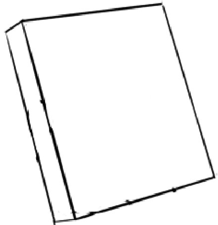

Art Tutorial 2
Date: 2024-7-10 12:00:00
Did you practice? I hope so.
If you didn't practice, then it'll never work out (bitter smile). As long as you're able to get the correct sizing done, then you'll do well!
This post will be a bit shorter, but we'll work on hands, feet, and the head, to create a complete figure to work on.
Lets start with the hand
A lot of people say the hand is the hardest thing to draw, but that's mostly because they never learned how to do it proper! A hand is nothing more than a 3-D rectangle with some cylinders sticking out. Just make note that the hands are different where the left and the right are. Even I make this mistake sometimes.
Start with a simple rectangular prism like such.
From there, you want to start adding the cylinders, attempting to make it both flushed together.
I shortened the rectangular prism a bit. Make note of the thumb placement, it has to be lower, and the tip close to the index finger. From there, we're gonna start shaving off portions of the simple shapes.
And now we have a hand. Lets do another example.
This one will be at a different angle. For general hand sizes, make 2 small balls, similar to joint sizes for the body. One ball for the hand, the other for the fingers.
Now that we have knowledge on how to make hands, lets add some to our art.
Following what we just learned, I create the hands desired for my pose.
How about that? Just gotta keep practicing! Hands are usually the thing struggles with, along with faces (we'll go over them next). Just gotta practice!
Now on faces.
You can actually, calculate this with math and rulers, and if you really want to get in depth with this sort of thing, I can recommend some readings later.
To make things simple, lets start with making a more correct head using a 2x3 square.

Next we will be drawing a circle in the first 2 squares, and we're gonna draw the chin (ignore how thick the circle is).
Now we're gonna do a bunch of math to fill in the rest. We're gonna measure the "eye" and use that to measure everything. We're gonna divide the squares into three equal parts.
The lines aren't straight, but if you have ruler it'll be easier, but it should about like this. Next we're gonna add eyes, they'll be put at specific spots.
Now for the lips, they're gonna be in the middle of the eye, above line 6.

The ears will be added in the middle of the eye to about the nose bottom.

And now our face is complete! Its a bit creepy, isn't it? But once you add features, it'll be more appealing.
If you want to understand this more, I recommend checking out this website. Ignore that it's old and in Japanese, and don't ask why I know of this old website. It's a very good/detailed guide.
Now we'll add this to our body!
Now we'll finish with feet.
This part is pretty simple, as it's similar to hands, except the feet are a bit longer. Truthfully, I usually add shoes, boots, etc. So I never really practice proper feet much.
We'll add a joint at the back of the feet, along with about the same size for the front. Since I normally put boots on, it'll look incomplete.
And now, we have our whole body set up! But its looking a bit blocky still. In the next lesson, we'll learn how to shape up the body.